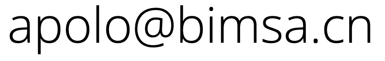

Luis Apolo
I'm an assistant professor at the Yanqi Lake Beijing Institute of Mathematical Sciences and Applications (Bimsa) interested in quantum gravity, conformal field theory, and their relationship via the AdS/CFT correspondence.
Research
My research focuses on holography and its extensions beyond anti-de Sitter (AdS) spacetimes. A major motivation behind my research is to understand how holography and quantum gravity work in the real world. I’m particularly interested in the construction of top-down models of non-AdS holography obtained from string theory, and in further developing the holographic dictionary of known bottom-up constructions.
Currently I'm studying a class of solvable irrelevant deformations of 2d conformal field theories and their relationship to non-AdS holography and string theory. You can read more about it here and here.
Teaching
- Tsinghua University, Spring 2024: Physics 0
- Bimsa, Fall 2023: Holography and TTbar deformations
- Tsinghua University, Spring 2021: Aspects of holography and irrelevant deformations
Lectures
- Single-trace TTbar deformations and string theory , 3rd Young Frontiers Meeting (zoom), September 12-14th, 2022 (Recorded lectures: I , II , III ◇ Lecture notes: I , II , III )
Selected publications
A full list of my publications can be found in: inSPIRE | arXiv.
- L. Apolo, A. Belin, S. Bintanja, A. Castro and C. Keller, Deforming symmetric product orbifolds: a tale of moduli and higher spin currents [JHEP08 (2022) 159, 2204.07590 ]
- L. Apolo, S. Detournay and W. Song, TsT, TTbar and black strings [JHEP06 (2020) 109, 1911.12359]
- L. Apolo and M. Porrati, Free boundary conditions and the AdS3/CFT2 correspondence [JHEP1403 (2014) 116, 1401.1197]
Short CV
- Assistant Professor, Bimsa, 2023 - present
- Postdoc, University of Amsterdam, 2021 - 2023
- Postdoc, Tsinghua University, 2017 - 2020
- Postdoc, Stockholm University, 2014 - 2017
- Ph. D, New York University, 2014
Contact info
email:

address:
Beijing Institute of Mathematical
Sciences and Applications,
No. 544 Hefangkou, Huariou
District, Beijing, China